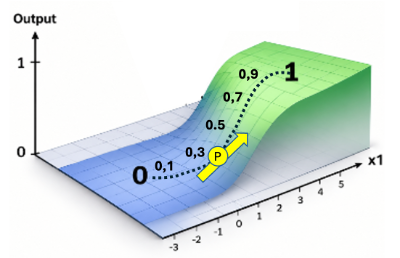
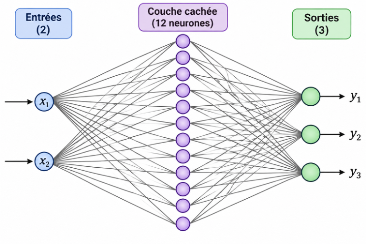

L'apprentissage
Comment les poids se fixent
Les fonctions d'activation dérivables
Une fonction d'activation continue et dérivable,
bornée entre 0 et 1, permet de mesurer l'erreur.
La position de la prédiction P et l'inclinaison de la tangente à ce point de la courbe donnent la direction à suivre.

La surface de prédiction avec une fonction d'activation sigmoïde.
L'apprentissage
Réduire l'erreur consiste à descendre une montagne par temps de brouillard
Dans le brouillard, on ne sait pas où on est.
On peut arriver à sentir sous ses pieds comment est la pente.
On fait le choix de descendre - tant qu'on peut.
La descente de gradient
La montagne des erreurs a un relief : chaque position (valeur des poids) a une altitude (une valeur d'erreur).
Cette description du relief a un nom : la fonction de coût.
On ne connaît ni son maximum ni son minimum.
À chaque nouvelle position (changement des poids),
on peut mesurer la pente de l'erreur finale, son gradient.
On fait alors le choix rationnel d'un petit pas dans la direction où cette erreur diminue
et on recommence tant qu'on peut :
C'est la descente de gradient.

On ne peut pas savoir si on est loin du fond de la vallée,
ni même s'il existe une seule vallée plutôt que plusieurs.
Le relief peut tromper :
si on a atteint une cuvette au lieu de la vallée, l'erreur restera grande.
L'apprentissage n'est jamais sûr : il faut des validations postérieures à l'entraînement.
La rétropropagation
Le génie des années 80, c'est la rétropropagation : on a su démontrer qu'en composant des fonctions dérivables en couches, on peut remonter l'erreur de la sortie jusqu'aux premières couches, et donc d'entraîner des couches cachées.
Principes
Pour chaque neurone de sortie on mesure l'erreur, son ampleur et la direction à prendre pour la diminuer.
Cette erreur est renvoyée aux neurones de la couche cachée précédente au prorata de leur influence.
Chaque neurone caché sait à son tour de quel côté descendre et de combien se corriger.
Ce que les couches cachées finissent par détecter
Comme plusieurs sorties peuvent demander à une couche cachée des ajustements contradictoires,
les exigences s'additionnent.
La couche de neurones cachés fabrique alors des compromis, qui révèlent ce que les sorties ont en commun.
Dans la reconnaissance d'images, on observe après apprentissage que les premières couches cachées détectent des éléments très simples : des arêtes, des contrastes, des petites textures.
Les couches suivantes les combinent : des coins, des courbes, des motifs récurrents.
Les suivantes encore : des morceaux d'objets, un œil, une roue, un toit.
Les dernières couches n'ont plus qu'à assembler ces pièces pour reconnaître un visage, une voiture, une maison.

Dans l'analyse de texte, même progression : les premières couches repèrent des suites de lettres et de mots, les suivantes des tournures récurrentes proches de la grammaire, les suivantes le sens des expressions, jusqu'aux intentions générales du texte.
Les réseaux font émerger des aptitudes
Aucune de ces aptitudes n'a été programmée, elles émergent de la masse.Par des compromis successifs chaque couche apprend ce qui est commun aux demandes de la suivante.
Un réseau ne peut apprendre que ce qui est déjà présent, sous forme de régularités, dans son jeu d'entraînement.
Exemple d'apprentissage d'un réseau
Topologie exemple : un MLP (Multi Layer Perceptron)
-
Couches de neurones
- Couche d'entrée : 2 neurones (x, y) coordonnées sur un écran 200x400, soit 80 000 pixels
- Couche cachée : 12 neurones
- Couche de sortie : 3 neurones
-
Fonctions d'activation
-
Couche cachée : ReLU (Rectified Linear Unit)
Évite le problème du gradient évanescent (méplat) et permet un apprentissage plus rapide.
-
Couche de sortie : Sigmoïde
Produit des valeurs entre 0 et 1 pour chacune des sorties.
-
Couche cachée : ReLU (Rectified Linear Unit)

Ce modèle a 75 paramètres :
Du côté couche de sortie on a : 3 fois (12 poids + 1 biais) soit 39 paramètres.
Pourquoi 12 neurones
Au départ, on ne sait pas exactement combien.
On teste différentes architectures et on regarde les résultats obtenus par le jeu de test pour choisir la meilleure configuration.
10 neurones cachés : 96,75% de précision
12 neurones cachés : 97,00% de précision
16 neurones cachés : 94,75% de précision
On aura noté que plus de neurones ne font pas toujours de meilleurs résultats
Apprentissage supervisé
Supervisé indique qu'on fournit au départ un dataset avec les couples (entrée : sortie) à apprendre.
Un dataset à créer
A supposer en entrée les coordonnées d'un clic sur un écran 200 x 400 qui porte des cercles différents
On ne peut pas fournir les 80 000 entrées avec pour chacune le résultat attendu.
On peut se baser une règle empirique :
prendre 10 à 100 fois plus de données que de paramètres.
Si on retient un facteur 20, il faut avoir environ 1500 entrées dans ce jeu d'entraînement.
Entraînement vs Validation
Ces données sont brassées puis réparties en deux lots : entraînement 80% et validation20%.
Le réseau est entraîné avec le premier lot (1200 entrées) et on obtient un modèle (le tableau des paramètres).
On passe ensuite le jeu de validation (300 entrées) sur ce modèle pour voir s'il prédit correctement.
Taux de précision
Un entraînement est considéré comme correct si son taux de précision est supérieur au seuil adapté à son domaine.
| Domaine | Seuil typique | Exemple |
|---|---|---|
| Projet pédagogique | 90-95% | Acceptable pour l'apprentissage |
| Recommandation de produits | 85-90% | Les erreurs sont tolérées |
| Reconnaissance faciale | 99,9% | Faux positifs inacceptables |
| Diagnostic médical | 99,99% | Une erreur peut coûter une vie |
| Conduite autonome | 99,999% | Tolérance quasi nulle |
Apprentissage en Epoch
Une Epoch correspond au passage de tous les cas du jeu d'entraînement une fois.
À la fin d'une epoch, on observe la précision et on s'arrête si elle plafonne.
Epoch 0: Loss=1.8974, Accuracy=23.88%
Epoch 200: Loss=0.5561, Accuracy=87.38%
Epoch 400: Loss=0.3315, Accuracy=92.13%
Epoch 600: Loss=0.2496, Accuracy=94.13%
Epoch 800: Loss=0.2168, Accuracy=95.50%
Epoch 1000: Loss=0.1999, Accuracy=95.38%
Epoch 1200: Loss=0.1895, Accuracy=95.50%
Epoch 1400: Loss=0.1834, Accuracy=95.38%
Epoch 1600: Loss=0.1785, Accuracy=95.50%
Epoch 1800: Loss=0.1711, Accuracy=95.75%
Temps d'entraînement: 1.00s
Précision sur le jeu de test: 388/400 (97.00%)
Prise de conscience énergétique
Rien que sur ce tout petit réseau de 12 neurones:- pour 1 test (x1,x2): 60 multiplications et 63 additions pour le calcul d'un score.
- pour une Epoch (1200 tests): 72 000 multiplications et 75 800 additions , soit 147 600 opérations arithmétiques.
- pour les 1800 Epoch d'un seul apprentissage exemple: 265 680 000 opérations arithmétiques!
Pratiquer
Entrainer un réseau à piloter les feux tricolores
en reconnaissant des ronds colorés sur une tablette.
Le code pour cet apprentissage tourne directement dans le navigateur.(Ce n'est pas si compliqué d'entraîner un réseau).
Pour ceux qui veulent en savoir encore plus sur les concepts fondamentaux des réseaux de neurones:
Voir la description complète et détaillée du projet